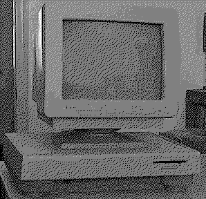

Previous
Next
TOC
Der Atari EST mit 68020 CPU
Der Atari EST wurde von Atari zwar entwickelt und besitzt eine
MC68020 CPU und das Gehäuse sieht recht MegaST ähnlich aus, wurde
aber dennoch nur auf der Hannovermesse CeBit hinter verschlossenen
Türen gezeigt. Der EST kam nie auf dem Markt, weil sich Atari dann
doch entschloß den TT030 mit einer MC68030 CPU auf den Markt zu
bringen.
Das Gehäuse hier, enthielt jedoch keine Hauptplatine und wies auch
keinerlei Beschriftungen auf.
Geplant waren:
CPU
MC68020
FUP
MC68881/MC68882
Hauptspeicher
4 Megabyte
Betriebssystem Unix System V or TOS
Custom Chips
6 neue darunter Blitter II und Shifter II

Kapitel Der Atari EST mit 68020 CPU, Seite 1